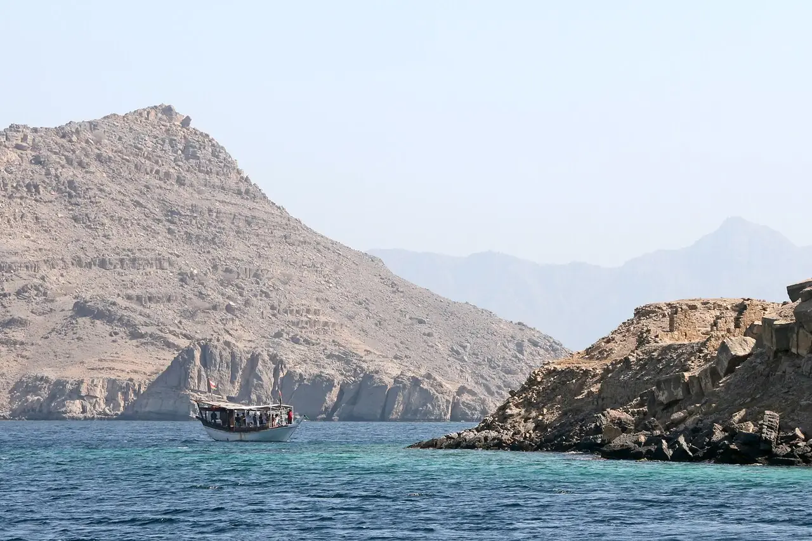

Fjords du Musandam
Khasab, Oman · kayak, snorkeling, plongée

Péninsule omanaise découpée en fjords (khors) aux falaises abruptes, au bord du détroit d’Ormuz. Les sorties en boutre depuis le port de Khasab, point indiqué ici, s’arrêtent pour du snorkeling et du kayak, souvent en compagnie de dauphins.
- Lieu
- Khasab, Oman
- Niveau
- Variable selon les conditions
- Activités
- kayak, snorkeling, plongée
- Type d'eau
- Mer / océan
- Coordonnées
- 26.20, 56.25 (position approximative du secteur)
Dangers à connaître
- Courants près du détroit d’Ormuz et trafic maritime important.
- Chaleur extrême de mai à septembre.
Le conseil d'Ocean Buddy
Vérifie les formalités de passage de frontière et les conseils aux voyageurs, et pars avec un opérateur local : les fjords sont isolés.
Ouvrir dans Ocean Buddy Télécharger sur l'App Store
Source : Fiche Ocean Buddy · septembre 2026 · à vérifier localement.